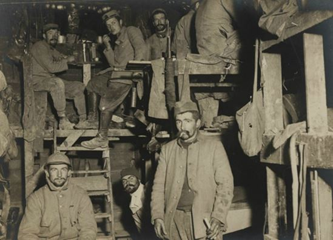
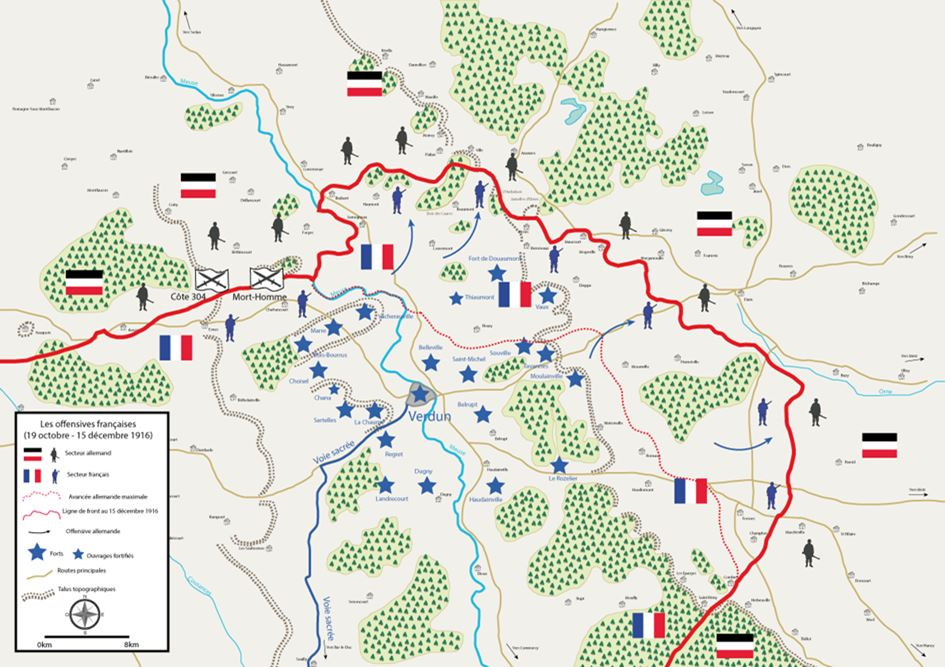
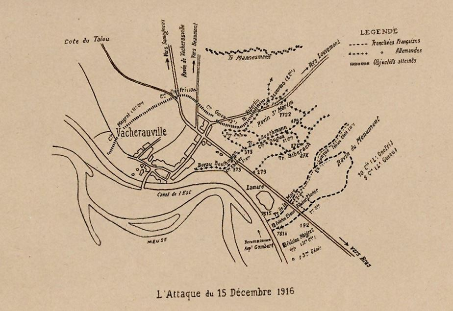
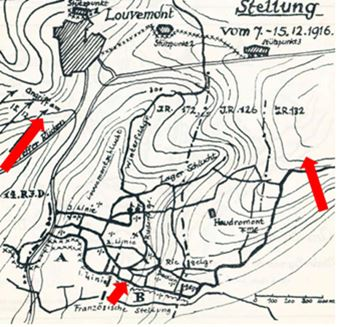
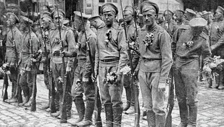
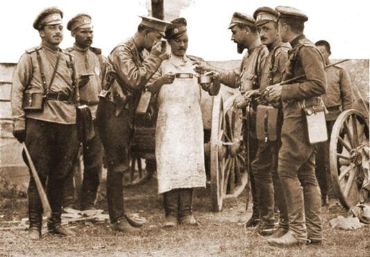

Décembre 1916 est avant tout le mois de la fin de la bataille de Verdun. Symbole du sacrifice et de la résistance de l’Armée française de la Grande Guerre, comme de l’horreur des tranchées, la bataille de Verdun s’achève sur une victoire défensive française. Ce mois de décembre ne sera toutefois pas moins meurtrier que les précédents et débute en ce 853ème jour de guerre…
Du vendredi 1er décembre au dimanche 10 décembre 1916
Sur les fronts belge et français
Les communiqués ne signalent, dans les secteurs belge, français et anglais, qu'une assez grande activité d'artillerie et des combats de tranchées.
Sur la rive gauche de la Meuse, canonnades intermittentes.
Au sud de la Somme, deux coups de main sont tentés par l'ennemi, le 5 décembre, sur de petits postes français de la région de Barleux mais ils sont aisément repoussés.
Le lendemain, une petite attaque allemande, dirigée contre les positions françaises au nord du village de Vaux, a complètement échoué sous les feux de mitrailleuses.
Le 9 décembre, sur la rive gauche de la Meuse, les troupes françaises rejettent l'ennemi d'une partie des éléments de tranchées qu'il avait occupés le 6 sur les pentes est de la cote 304.
A la Chambre française, le Comité secret a clos ses travaux et, en séance publique, par 344 voix contre 163, a voté un ordre du jour de confiance au ministère Briand, « en prenant acte des déclarations du gouvernement sur la réorganisation du commandement, la conduite de la guerre sous une direction restreinte, les sacrifices: communs des Alliés pour assurer la victoire ».
Sur les fronts russes
Les communiqués russes, concernant le front de la Russie proprement dite et le front du Caucase, sont de plus en plus rares : les tranchées parallèles s'observent; fusillades et canonnades intermittentes.
Dans les Carpathes boisées, l'ennemi a attaqué une hauteur au sud de Voronejka à l'aide de son artillerie lourde. Les troupes russes ont dû reculer.
Continuation des combats en Moldavie (vallée du Trotuj et vallée du Doftiany). Les Russes ont occupé une série de collines que les Austro-Allemands ont immédiatement essayé de reprendre.
Bucarest est pris : aucune résistance n'a été faite par les Roumains qui ont évacué les forts et la ville afin d'éviter le bombardement. La nouvelle était attendue : les critiques militaires avaient espéré, un moment, que les Russes arriveraient à temps pour sauver cette capitale et rétablir une situation bien compromise; mais les Russes annoncent qu'eux-mêmes, pressés par l'ennemi, ont dû reculer au flanc gauche des Roumains; c'est donc qu'ils sont arrivés et qu'ils n'ont pas pu tenir.
Du lundi 11 décembre au dimanche 17 décembre 1916
Sur les fronts belge et français
Sur le front français, les armées adverses recommencent, cette semaine à se tâter : les communiqués signalent de courtes actions échelonnées sur de nombreux saillants du front; elles forment un ensemble de coups de sonde qui est le prélude habituel d'opérations importantes. L'initiative de ces actions isolées revient tantôt aux Allemands, tantôt aux troupes françaises. Entre la Meuse et la Woëvre, au nord de Douaumont, les troupes françaises enfoncent le front ennemi sur une largeur de 10 kilomètres et une profondeur de 3 kilomètres; ils feront environ 10 000 prisonniers et prendront un matériel considérable.
Le 12 décembre, Luttes d'artillerie violentes dans la région de la Ville-aux-Bois (nord-ouest de Reims) et dans le secteur de Douaumont.
Le 15 décembre, Actions d'artillerie assez vives au sud de la Somme, sur les deux rives de la Meuse et sur les hauteurs au sud du Bonhomme.
Attaque de Vacherauville, deux compagnies d’Allemands, terrés dans les caves, sont surpris par la vigueur de l’attaque. Pourtant quelques fractions se ressaisissent et tentent de résister.
Un peloton français est pris d’enfilade par une mitrailleuse mais, enlevé par son chef, il atteint son objectif après un rapide et vif combat. Les troupes françaises font trois cents prisonniers dont quatre officiers et s’emparent de trois mitrailleuses et d’une grande quantité de matériel.
Les Anglais ont pénétré dans les tranchées allemandes vers Monchy-au-Bois (sud d'Arras) et lancé des bombes dans des abris remplis de troupes, causant de nombreuses pertes à l'ennemi.
Après une préparation d'artillerie qui a duré plusieurs jours, l’infanterie française attaque l'ennemi au nord de Douaumont, entre la Meuse et la Woëvre, sur un front de 10 kilomètres. L'attaque s'est déclenchée le 16 décembre à dix heures. Le front ennemi est partout enfoncé sur une profondeur de 3 kilomètres environ. Outre de nombreuses tranchées, les Français enlèvent les villages de Vacherauville, Louvemont, la ferme des Chambrettes, les ouvrages d'Hardaumont et de Bezonvaux.
Les troupes françaises font un grand nombre de prisonniers : 7500 dont 200 officiers sont déjà passés par les postes de commandement. Malgré le temps défavorable, l'aviation a pris une brillante part au combat. Le succès est complet : les troupes témoignent d'un très vif enthousiasme : les pertes françaises sont légères.
Sur le front russe
Les quelques combats locaux signalés par les communiqués semblent être des épisodes sans liaison et sans importance.
En Macédoine, le 12 décembre, les attaques des troupes alliées dans le secteur au nord de Monastir ont été gênées par le mauvais temps. Les Germano-Bulgares ont opposé une résistance acharnée. La lutte a été particulièrement vive au nord de la cote 1050 où une hauteur attaquée par les Russes a passé de mains en mains.
En Roumanie, les Russes conservent leur front à peu près intact, mais sont incapables d'offrir une résistance sérieuse aux armées des puissances centrales qui les pressent maintenant le long du front tout entier. (La ville de Buzen, dont l'ennemi vient de s'emparer, est un centre important de chemins de fer où se joignent les lignes de la Bukovine et de la Russie méridionale.)
En Dobroudja, les Russes battent également en retraite.
En Russie, après un discours du ministre des Affaires étrangères, la Douma a voté, à l'unanimité, un ordre du jour adhérant « au refus catégorique des gouvernements alliés d'entamer, dans les conditions actuelles, des négociations de paix, quelles qu'elles soient».
Du lundi 18 décembre au dimanche 24 décembre 1916
Sur les fronts belge et français
Dans la région de Loos, en Artois et en Champagne, les Alliés effectuent des coups de main: par suite des bouleversements atmosphériques et, aussi, pour des raisons d'ordre militaire intéressant tous les fronts de l'Entente, dont les états-majors, en collaboration de plus en plus étroite, sont seuls juges, cette période d'observation, d'une ligne à l'autre, se prolonge.
Sur la rive droite de la Meuse, l'artillerie allemande, contrebattue par l’artillerie française, a bombardé les nouvelles lignes de Vacherauville à Bezonvaux et notamment le secteur de la ferme des Chambrettes. Canonnade intermittente sur le reste du front.
Sur la rive droite de la Meuse et de chaque côté de la Somme, canonnade violente par intermittence.
Le 19 décembre, au sud de la Somme, un détachement ennemi, qui tentait d'aborder les lignes françaises au sud-est de Berny, a été repoussé à la grenade. Un autre détachement qui essayait d'exécuter un coup de main sur les positions françaises au sud de Fresnes a été repoussé à la grenade. Sur la rive droite de la Meuse, après un vif bombardement, les Allemands ont contre-attaqué les positions françaises. Ils n'avaient réussi à prendre pied que sur un point, à la ferme des Chambrettes mais les troupes françaises parviennent finalement à les chasser.
Depuis le 15 décembre, le nombre des prisonniers sur le front de Verdun fait par les Français s'élève à 11.387 dont 284 officiers. Le matériel pris ou détruit comprend 115 canons, 44 lance-bombes, 107 mitrailleuses.
Sur le front russe
La supériorité numérique en hommes et en artillerie lourde des Austro-Allemands a eu raison de la résistance acharnée des Russes et Roumains sur l'ensemble du front que ces derniers tenaient en Grande-Valachie : ce n'est que sur la ligne du Sereth que les Alliés espèrent retrouver leur force victorieuse, dans les réserves qui s'y groupent, et le théâtre de la bataille qu'ils auront choisi et organisé eux-mêmes.
Le 19 décembre, les Russes reprennent les tranchées perdues sur le front de Volhynie. Ils capturent, ce même jour, 200 Austro-Allemands dans les Carpathes boisées et repoussent une attaque près de Buzeu.
Le 20 décembre, une avant-garde austro-allemande est arrêtée par les Russes au sud de Braïla.
Les Russes progressent fortement, le 22 décembre, dans les Carpathes boisées, où ils ont aussi repoussé plusieurs attaques. De violents combats ont eu lieu entre les troupes de Mackensen et les Russes, dans le nord de la Dobroudja.
Du lundi 25 décembre au dimanche 31 décembre 1916
Sur les fronts belge et français
Les communiqués officiels donnent l'impression que les opérations sont momentanément arrêtées : cependant l'artillerie anglaise se montre très active dans la région comprise entre l'Ancre et la Somme; toutefois le terrain est détrempé par les dernières pluies, les soldats se meuvent dans la boue; dans ces conditions il est difficile d'entreprendre une opération importante.
Quelques coups de main des Allemands contre les tranchées des secteurs du Noyonnais et du Soissonnais ont été arrêtés par notre artillerie; nos aviateurs sont actifs sur les lignes d'arrière, et notre état-major veille pour éviter toute surprise.
Les Allemands essaient-ils une période d'offensives sur la rive gauche de la Meuse ? Le violent bombardement qu'ils ont dirigé, cette semaine, sur les positions françaises s'étendant des bords du fleuve jusqu'à Avocourt (soit un front d'environ 12 kilomètres) n'a été suivi jusqu'ici d'aucune action d'infanterie.
Sur le front russe
De même, sur ce front, les communiqués, de plus en plus rares, ne parlent que de canonnade intermittente.
Le 25 décembre, sur le front russe, deux détachements ennemis ont été rejeté par le feu des Russes à Boidourg. D'autres tentatives allemandes ont été enrayées sur la Bistritza. Dans les Carpathes boisées, les troupes russes ont occupé des retranchements ennemis au nord de la rivière Uzu. Elles ont capturé 5 officiers, 100 hommes et 3 mitrailleuses.
En Roumanie, Mackensen déploie toujours beaucoup d'activité. Les Austro-Allemands, considérablement renforcés, ont fait fléchir, à nouveau, la ligne défensive des Russes sur la rive gauche du Romnicu. Les critiques militaires russes ne prévoient une défensive efficace que sur la ligne du Sereth. Toutefois, les Russes n'ont jusqu'ici, engagé dans la campagne de Roumanie que quelques corps d'armée sur les 14 ou 15 qu'ils ont groupés en arrière du Sereth.
Partager cette page